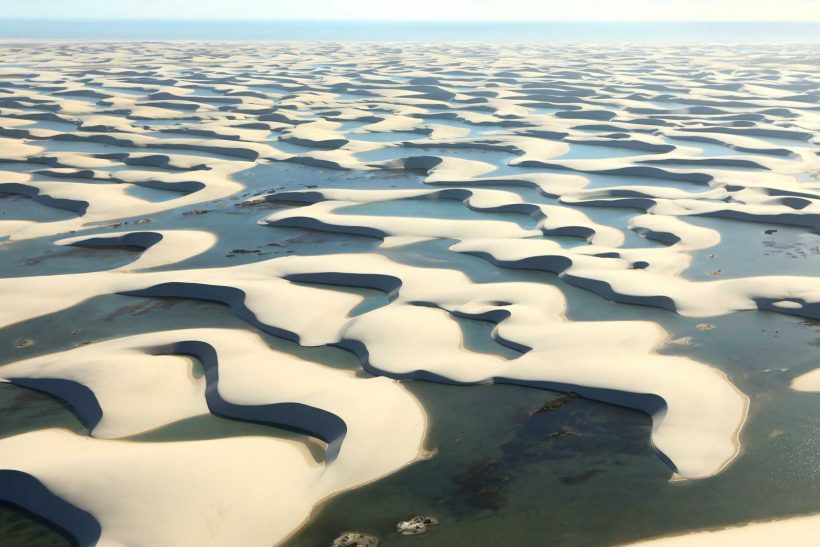
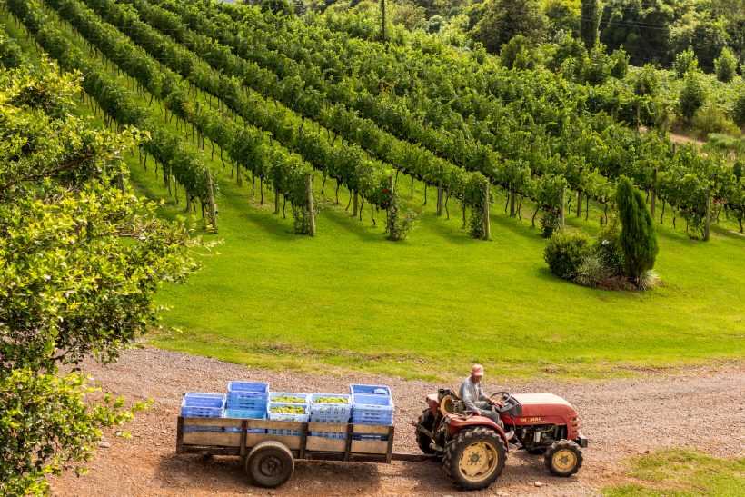
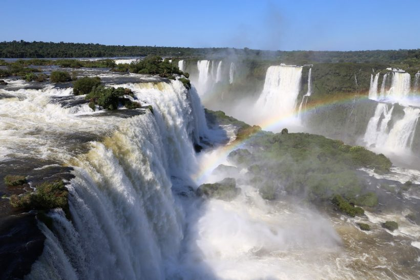

Destinos Populares
Bonito - Mato Grosso do sul

Bonito, em Mato Grosso do Sul, é um destino de ecoturismo famoso por suas águas cristalinas e paisagens naturais deslumbrantes. Ideal para snorkelling, mergulho em cavernas submersas e trilhas até cachoeiras magníficas, Bonito combina aventura e preservação ambiental em um cenário de beleza única no Brasil.
Boipeba - Bahia

Boipeba, localizada na Bahia, é um paraíso tropical intocado conhecido por suas praias de areias brancas e águas azul-turquesa. Este destino oferece uma atmosfera tranquila e autêntica, perfeita para quem busca relaxamento e contato com a natureza. As atividades incluem mergulho, passeios de barco para ilhas vizinhas, como Morro de São Paulo, e caminhadas por trilhas que levam a paisagens deslumbrantes e vilarejos charmosos. Boipeba é um refúgio ideal para aqueles que desejam explorar a beleza natural da Bahia longe das multidões.
Chapada Dos Veadeiros - Goiás

A Chapada dos Veadeiros, em Goiás, é um santuário de natureza exuberante e espiritualidade. Reconhecida como Patrimônio Mundial da UNESCO, oferece paisagens deslumbrantes de cerrado, cachoeiras cristalinas e formações rochosas únicas. Este destino é ideal para caminhadas em trilhas que levam a quedas d'água impressionantes, como a do Rio Preto e a de Santa Bárbara, e para contemplar a biodiversidade única da região, incluindo espécies raras de flora e fauna.
Chapada Diamantina - Bahia

A Chapada Diamantina, na Bahia, é um destino de beleza natural excepcional, com montanhas, vales, cachoeiras e grutas impressionantes. Além da paisagem deslumbrante, a região possui uma rica história ligada à mineração de diamantes e cultura local, representada em cidades como Lençóis e Mucugê. Ideal para ecoturismo e aventura, oferece trilhas diversas, como o Morro do Pai Inácio e o Vale do Pati, proporcionando uma experiência enriquecedora em contato com a natureza e a cultura brasileira.
Fernando De Noronha - Pernambuco

Fernando de Noronha, em Pernambuco, é um arquipélago paradisíaco protegido como Parque Nacional Marinho. Conhecido por suas praias de águas cristalinas, como Baía do Sancho, e vida marinha diversificada, oferece oportunidades excepcionais para snorkelling e mergulho. Além das paisagens deslumbrantes, possui trilhas até mirantes como o Morro do Pico, proporcionando vistas panorâmicas únicas. Com um forte compromisso com a preservação ambiental, é um destino de natureza intocada e beleza incomparável no Brasil.
João Pessoa - Paraíba

João Pessoa, capital da Paraíba, é conhecida por suas praias paradisíacas, como Tambaba, e seu centro histórico com construções coloniais e igrejas centenárias. O pôr do sol na Praia do Jacaré é uma experiência única ao som do bolero de Ravel. A cidade também oferece uma rica gastronomia e eventos culturais que celebram a música e tradições locais, tornando João Pessoa um destino encantador para quem busca história, cultura e belezas naturais no nordeste do Brasil.
Lençóis Maranhenses
Os Lençóis Maranhenses, no Maranhão, são conhecidos por suas dunas de areia branca e lagoas cristalinas em tons de azul e verde. Durante a temporada de chuvas, entre junho e setembro, as lagoas se formam, oferecendo cenários impressionantes para nadar e relaxar. O parque nacional também abriga uma biodiversidade única adaptada ao ambiente de dunas e lagoas. É um destino ideal para quem busca aventura e contemplação da natureza em sua forma mais pura e bela.
Pantanal - Mato Grosso do Sul

O Pantanal, situado em Mato Grosso do Sul, é a maior planície alagável do mundo, conhecida por sua rica biodiversidade. Abriga uma variedade impressionante de vida selvagem, incluindo jacarés, capivaras e onças-pintadas. Durante a estação seca, de abril a setembro, é ideal para safáris aquáticos e terrestres, oferecendo oportunidades únicas de observação de animais. Além disso, o Pantanal preserva a cultura local e oferece uma hospitalidade autêntica, tornando-se um destino imperdível para quem aprecia natureza e aventura.
Pirenópolis - Goiás

Pirenópolis, em Goiás, é uma cidade histórica famosa por suas ruas de paralelepípedo, casarões coloniais e igrejas antigas. Localizada próxima à Serra dos Pirineus, oferece cachoeiras como a do Abade e das Araras, perfeitas para trilhas e banhos refrescantes. O centro preserva a arquitetura colonial e é repleto de lojas de artesanato e restaurantes que destacam a culinária regional. É também conhecida por suas festas tradicionais, como a Festa do Divino Espírito Santo, que celebram as tradições locais. Pirenópolis é ideal para quem busca história, cultura e natureza em um ambiente tranquilo e encantador.
Porto de Galinhas - Pernambuco

Porto de Galinhas, em Pernambuco, é famoso por suas águas claras, piscinas naturais e areias brancas. Ideal para mergulho durante a maré baixa, revela uma rica vida marinha. A vila possui uma animada infraestrutura turística com hotéis, restaurantes e lojas de artesanato. As praias ao redor, como Muro Alto e Maracaípe, completam o cenário paradisíaco, tornando Porto de Galinhas um destino perfeito para quem busca sol, mar e diversão no Nordeste brasileiro.
Bento Gonçalves, Rio Grande do Sul
Bento Gonçalves é uma das cidades que faz parte do Vale dos Vinhedos, região vinícola do Rio Grande do Sul. A cidade está a cerca de duas horas de carro de Porto Alegre e oferece lindas paisagens, com direito a muito vinho, espumante, boa gastronomia e uma imersão na cultura dos imigrantes italianos, bastante presentes nessa região da serra gaúcha.
Foz do Iguaçu, Paraná
Um dos principais destinos turísticos do Brasil, Foz do Iguaçu guarda um dos grandes tesouros naturais do país: as Cataratas do Iguaçu,! Localizadas na divisa com a Argentina, as quedas d’águas tem um volume surpreendente. A cidade também oferece boas oportunidades para compras no Paraguai e tem cada vez mais atrações para pessoas de todas as idades. É um destino inesquecível, que vale a pena visitar ao menos uma vez na vida!